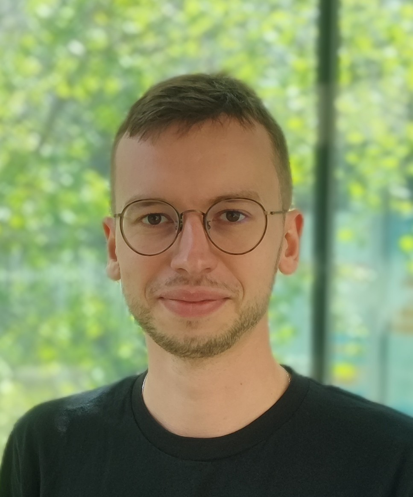

Artur Gesla - personal webpageRotor-stator computations Swirling jet computations |
 |
Hello! My name is Artur Gesla and I work in the field of Computational Fluid Dynamics. See the examples of the simulations of rotor-stator flow to get a flavour of my work.
PhD
My PhD defence presentation : download
My PhD manuscript : download
Conferences
16th ERCOFTAC SIG 33 Workshop, June 30- July 2, 2025, Cagliari, Sardinia, Italy, (From annular cavity to rotor-stator flow : nonlinear dynamics of axisymmetric rolls, presentation) pdf pptx